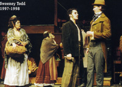

|

BOYS'
LIFE
LAS MENINAS
SUITCASE
FALL DANCE CONCERT
THE BACCHAE
SWEENEY TODD
GHOSTS
SPRING DANCE CONCERT
Back
|
Boys'
Life
by Howard Korder
September 25-28, October 2-4, 1997 8 pm
October 5, 1997 3 pm LEEDS THEATRE
CATHERINE BRYAN DILL CENTER FOR THE PERFORMING ARTS
Directed by Lowry Marshall
Set Design by John R. Lucas
Lighting Design by David P. Crowley
Costume Design by Phillip Contic
Technical Direction by William C. Roche
CAST
JACK McCaleb Burnett
DON Jonathan Wolanske
PHIL Gregory Funaro
KAREN Valerie Bernstein
MAN Andy Greenwald
MAGGIE Rebecca Bellingham
LISA Katharine Powell
GIRL Gina Hirsch
CARLA Christina S. White
Time: The 80's
Place: A Large City
There will be a ten-minute intermission between Acts I and II
BOYS' LIFE is presented by arrangement with Dramatists Play Service,
Inc. in New York.
BOYS' LIFE was presented by Lincoln Center Theater at the Mitzi E. Newhouse
Theater in New York City opening on Februrary 29, 1988.
Additional music by David Yazbek
DIRECTOR'S NOTE
"Name three things that happened in the Eighties. You have one
minute."
"Let's see. . .Ronald Reagan . . . and . . . and . . . and . .
. the Soviet Union?
. was that still the Eighties? . . . and . . . and . . .did I say Ronald
Reagan?"
"Give up?"
"That wasn't a minute!"
The Eighties. Can it be possible that a play set in the late Eighties
is already a period piece? Howard Korder's caustic comedy would seem
to support that theory. Things are moving so fast, as we catapult toward
the new millennium, that even a decade ago feels like a quarter century,
at least.
Here are some of the remarkable things the Boys' Life cast has realized
about the ancient world of the Eighties: There were no cell phones to
speak of. Almost no one had a CD player yet. The answering machine which
you could access from afar was a relative novelty. Very few people had
a personal computer. No home shopping on the cable. No voice mail. No
surfing the net. As one person put it, "Who knew from dot com?"
And remember the clothes in the Eighties? Big-shouldered power suits?
Dangerous looking leather? Heavy metal sequined dresses? Jewel-tone
colors? Eighties fashion was a clear reflection of the almost universal
lust for money and power. The yuppies were working out at the gym, and
their clothes were designed to reveal--or, if necessary, to create the
illusion of--a powerful V-shaped body. The huge shoulder pads in women's
workaday clothing were designed to send the message that the wearer
was no one to be pushed around. High heels were still regulation office
wear, but there was a revolution in the making: for the first time women
were seen on the streets of America's cities, walking to work in that
incongruous combination of "full corporate battle gear" and
Reeboks.
Gender roles were being radically redefined with battalions of women
entering the corporate world. But as they scrambled up the rungs of
the corporate ladder, home and family seemed to drag them back by the
ankles. Professional women found that "having it all" usually
meant having two full-time jobs: one in the office, the other in the
kitchen. Yet, for the first time, a few couples in the vanguard were
reversing the traditional roles of husband and wife: he was the one
at home with the kids; she was bringing home the bacon. But at what
cost?
The battle of the sexes was heating up to a fever pitch. Sure, it was
still the same old story, a fight for love and glory, but the rules
of combat were changing. And the worst part was that in this war, there
seemed to be no victors. Sometimes it was even hard to tell the villains
from the good guys, the war criminals from their innocent victims.
It is on this ever-shifting battlefield that Howard Korder set his comedy
of sexual insecurity, which a reviewer for The New Yorker called "the
most balanced and intelligent comment on the battle of the sexes I've
seen in a long time…". Like all good comedy, Boys' Life is
both funny and sad. As our all-too-human foibles are exposed and ridiculed,
we find ourselves laughing one minute and mourning the next. And, if
all goes well, we leave the theatre gladder but wiser. --Lowry Marshall
PRODUCTION STAFF
Stage Manager Julie K. Novacek
Assistant Technical Director David P. Crowley
Technical Assistants Annabelle Heckler, Christina Nicosia, Joshua Saulle,
Matthew F. Woods
Assistant Stage Manager Amy Weiss
Dimmerboard Operator Giselda Beaudin
Sound Operator Anne Barylick
Set Crew TA25, TA3
Costume Shop Manager Ann S. Smith
Costume Design Assistant Justin Bernstine
Costume Shop Assistants Naomi Bernstein, Justin Bernstine, Jenny Eckberg,
Amy Hoffer
Wardrobe April Laktonen, Leslie Shelton
Running Crew Sandy Barrack, Shana Harvey
Musical Consultant Charlie Alterman
Front of House/Box Office Manager Karen Longest
Box Office Assistants Joanne Chapman, Zac Cunha, Kristie Lynn Roldan
Poster Design Jonathan Fortmiller
Publicity Photographer Jess Brakeley
ACKNOWLEDGMENTS
Richard Ting
Bob Gara
Gara’s Formal Wear
23 Washington St.
West Warwick, RI 02893
(401) 828-1005
SOCK & BUSKIN BOARD
Christina Nicosia (Chair), Lisa Arkin (Vice-Chair), David Pressman (Secretary),
Valerie Bernstein, Seth Goldberger, Eric Green, Alexandra Litow, Margaret
Marx, Megan McCrudden, Michael Schreiber, Rebecca White, Taylor White,
Jonathan Wolanske
UNIVERSITY THEATRE / SOCK AND BUSKIN presents
the World Premiere of
Las Meninas
by Lynn Nottage
October 23-26, Oct.30-Nov. 1, 1997 8 pm
November 2, 1997 3 pm STUART THEATRE
CATHERINE BRYAN DILL CENTER FOR THE PERFORMING ARTS
Directed by John Emigh
Set and Lighting Design by John R. Lucas
Costume Design by Phillip Contic
Sound Design by David P. Crowley
Choreography by Michelle Bach-Coulibaly
Technical Direction by William C. Roche
CAST
LOUISE MARIE THERESE Robyn C. Neblett
MOTHER SUPERIOR Kate Weisburd
KING LOUIS XIV OF FRANCE Dan O'Brien
DOCTOR FAGON Ryan Wulff
PAINTER Michael Crane
LADY IN WAITING Susanna Harris
LADY IN WAITING Serena Merriman
QUEEN MARIA THERESA OF FRANCE, Julie Fei-Fan Balzer
AND DAUGHTER TO THE KING OF SPAIN NABO SENSUGALI Justin Bernstine
ANNE OF AUSTRIA,QUEEN MOTHER OF FRANCE Jill A. Samuels
AND SISTER TO THE KING OF SPAIN THE DUCHESS DE LA VALLIERE Helene
Sevaux LOUISE DE LA BAUM LA BLANC
Time: 1695
Place: The Moret Convent, outside of Paris
There will be a ten-minute intermission between Acts I and II
LAS MENINAS is presented by arrangement with The Gersh Agency NY,
Inc.
DIRECTOR'S NOTE
A Yoruba proverb states that "The White man who made the pencil
also made the eraser."
How does one recapture an erased history?
In the library of St. Genevieve in the Latin Quarter of Paris, there
is a simple unsigned portrait of an African woman in nun's habit:
Louise Marie Therese, the Black Nun of Moret (1664-1732). Cloistered
all her life, this African-featured nun took the veil at the late
age of 31 in 1695. Journals and diaries attest to her having been
visited throughout her life by important personages from the royal
Court. A folder at St. Genevieve bears the title, "Documents
Concerning The Princess Louise Marie, Daughter of Louis XIV and Marie
Theresa." The folder is empty.
On November 1664, after a pregnancy marked by "dark forebodings,"
Maria Theresa, the pious and devoted Queen of the notoriously philandering
Louis XIV, gave birth to a baby daughter. Laughter is said to have
greeted her birth. Rumors ran wild in the court. The child was said
to have been born "black as ink from head to toe," covered
with hair, a monster. Shortly after birth, the child was pronounced
dead by a grief-stricken King.
It was rumored at Court that the child was fathered by an African
dwarf named Nabo, a young man from Dahomey presented to the Queen
by relatives in Spain. Soon after his arrival, Nabo had become the
Queen's favorite companion. Perhaps, it was discretely suggested,
a penetrating glance from this slave had corrupted the royal womb.
Nabo was sent for by the King. He disappeared.
Joseph Roach, in his recent Cities of the Dead: Circum-Atlantic Performance,
(Routledge 1996), suggests that such disappearances are frequent in
the annals of European history. The following lines are cobbled together
with apologies from various chapters of his book, representing one
of the several through lines of thought in an elegant argument.
Memory is a process that depends crucially on forgetting. [There are]
persistent Atlantic occasion[s] particularly subject to forgetting:
encounters between and among white, red, and black peoples. In representations
of such encounters, at least one of the parties seems fated to disappear
from the selective memory of another. On the one hand, forgetting
is an opportunistic tactic of whiteness. Such disappearances are necessary
to ensure the untroubled performance of a dominant trope: that of
genealogical succession, imagined as a stately procession, as an everlasting
club whose members succeed one another as if on parade. On the other,
the vast scope of the project of whiteness?and the scope of the contacts
amongst cultures that it required?limited the degree to which its
foils could be eradicated from the memory of those who had the deepest
motivation and the surest means to forget them. In a world continuously
reinvented by intercultural propinquity?and that is precisely what
the circum-Atlantic world was and is?the order of any procession may
be threatened with interruption or usurpation. There is a pressure
exerted by this implicit menace of usurpation. The fear that blood
will be mixed, a fear that intensifies the ritual expectation that
blood must be shed, haunts these representations like a vengeful ghost:
the specter of future generations threatening to be born.
How does one recapture a history erased in "the project of whiteness"?
One way is by refiguring it as fiction, in the subjunctive, as fantasy
and play?piecing together bits and pieces of dialogue noted in journals
and diaries, restaging encounters noted but not described, and letting
imagination, humor, and rage flood into the spaces left empty by the
human shredding machines of history's spin doctors.
And why name a play about events that may have taken place in a French
Court after a Spanish masterpiece painted by someone who never even
visited France? Perhaps, because Diego Velázquez, too, was
concerned with the backstage to history, with what is revealed, what
is hidden, and what gets seen in a distorted mirror. Perhaps, because
Maria Theresa and Louise Marie?close kin of the Spanish royal family
being prepared for history in Las Meninas (which has sometimes been
translated as The Ladies in Waiting)?are themselves ladies in waiting:
each waiting for love, for personal narrative, for her story to be
lived and performed.
Lynn Nottage graduated from Brown in 1987 and received an MFA in playwrighting
from Yale in 1989. Her plays have since been produced in New York
and at regional theatres around the country. Her newest play, Mud,
River, Stone, is being rehearsed for presentation at Playwrights Horizon
this fall. It is an honor and a pleasure to present the world premiere
of Las Meninas. On Tuesday, October 2nd, while this production was
in rehearsal, Lynn and her husband, Tony Gerber (also Brown 1987)
brought their own daughter into the world: Ruby Gerber. The production
is dedicated to her. -- JE
PRODUCTION STAFF
Stage Manager Megan C. McCrudden
Assistant Technical Director David P. Crowley
Technical Assistants Annabelle Heckler, Christina Nicosia, Joshua
Saulle, Matthew F. Woods
Assistant Stage Managers James Hayward, Nathan Wilson
Dimmerboard Operator Melanie Rawlins
Sound Operator Aya Morton
Set Crew TA25, TA3
Costume Shop Manager Ann S. Smith
Assistant Costume Designer Justin Bernstine
Costume Shop Assistants Naomi Bernstein, Justin Bernstine, Jenny Ekberg,
Amy Hofer
Wardrobe Tom Gray, Jessica L. Guarino, Jennifer Johung Wig and Milinery
Mistress Thea Grant
Wig and Milinery Construction Sharon Goldwater, Sara Grady, Thea Grant,
Abigail Joseph, Adi Segal, Emily Spivack, Rebecca White
Costume Special Effects Tom Carruthers
Fabric Painting Delari Johnston
Costume Construction Kay Lee, Katherine McBroom, TA27
Dramaturg Naima Lowe
Cultural Consultant Seydou Coulibaly
Front of House/Box Office Manager Karen Longest
Box Office Assistants Joanne Chapman, Kristie Lynn Roldan
Poster Design Jonathan Fortmiller
Publicity Photographer Jess Brakeley
ACKNOWLEDGMENTS
Eric Emigh, Ulrike Emigh, Tony Gerber, Ed Shea, Bacchus Mask by Uwe
Thaler
Music from the works of Hildegard of Bingen, Ahrweil Antiphone, Jean-Baptiste
Lully, Christoph Forster, and traditional sources, performed by Anonymous
4, The London Oboe Band, Peter Damm, The Bata Ensemble of Sakete,
Benin, Ousmane Sacko and Yakare Diabate, and Lazaro Ros Poster adapted
from a study of Las Meninas by Pablo Picasso, 1957
SOCK & BUSKIN BOARD
Christina Nicosia (Chair), Lisa Arkin (Vice-Chair), David Pressman
(Secretary), Valerie Bernstein, Seth Goldberger, Eric Green, Alexandra
Litow, Margaret Marx, Megan McCrudden, Michael Schreiber, Rebecca
White, Taylor White, Jonathan Wolanske
BROWNBROKERS'S
PRESENTS
Suit Case
Music, Book and Lyrics by Paul Grellong
Music and Orchestrations by Charles Kroll
November 13-16, 20-22, 1997 8 pm
November 23, 1997 3 pm LEEDS THEATRE
CATHERINE BRYAN DILL CENTER FOR THE PERFORMING ARTS
Directed by Eric Green and Nancy Johnston
Musical Direction by Charles Kroll
Set Design by Emily Jan
Costume Design by Jenny Ekberg
Lighting Design by Channing Moore
Choreography by Sara Ciarelli
Technical Direction by Roger Turner
CAST
PICKLE Joe Zarrow
HECKLEBY Taylor D. White
CATHERINE BAKER Katharine Powell
MIKE Noam Katz
AUBREY Miriam Silverman
JONAS Rufus L. Tureen
TANNER Dion Banville
DOC GRUMBLES X-ina Nicosia
BULL WEEVIL Rebecca White
GRANDMA Alix L.K. Sobler
TINA G / VIMA Ana Fox Chaney
JILL / GIRL / RADIO ANNOUNCER Dana Damiani
DROOG / GERHERTY David Edison
CORUSCA Valerie Linhart
DROOG / TAXI MAN Michael Smith
There will be a ten-minute intermission between Acts I and II
MUSICAL NUMBERS
ACT I
"Good Morning/Great Morning" Company
"Number Theory" Company
"Math 2" Catherine, Heckleby
"What Have You Got There?" Aubrey, Corusca, Jill, Vima
Travel Medley:
"Burrito + a Gatorade" Pickle, Mike, Company
"Inside/Outside" Catherine
"Canada" Mike, Pickle
"1412" Heckleby, Tanner, Bull Weevil
"Trash Dance" * Aubrey, Corusca, Jill, Vima
"I Could" Grandma
"Give Me Time" Catherine, Mike, Pickle
"Tina G" Mike, Tina, Gerherty, Pickle, Catherine
* composed by Mike Tarantino
ACT II
"I’m A Businessman" Bull Weevil, Company
"Me For Me" Aubrey
"I Could (Reprise)" Grandma, Heckleby
"Don't Tell Me (I Don’t Want To Know)" Jonas, Aubrey,
Bull Weevil
"Saving Grace" Tanner, Catherine, Mike, Aubrey, Pickle
"Arms Wide" Pickle
"Kissed In The Rain" Jonas, Aubrey, Company
"Good Morning/Great Morning (Reprise)" Company
DIRECTOR'S NOTE
To travel to the other side of imagination, to find a magical world
existing beyond the knowledge of the everyday, is a trend running
through the hopes of childhood - searching for that which has been
called impossible.
To deal with the world at hand, find a creative solution, and remember
the mystical illusion in all that is beyond belief, is so uncommon
to adulthood - no longer taking the time to imagine that which is
deemed impossible.
Every journey results in accumulation. We are so accustomed to this
build-up of both objects and ideas that there is no pattern to which
we can turn to get rid of our candy wrappers and our leftover beliefs.
Perhaps, as adults, we no longer closely examine what someone once
told us was impossible. Is the solution that we need to be found only
if we look inside of ourselves, inside of each other, inside of a
cactus? -- Eric Green and Nancy Johnston
ORCHESTRA
Charles Kroll, Conductor
Drums Josh Waldman
Bass Andrew Bergmann
Guitar Rob Hennis
Keyboard Moses Graubard
Violin Rebekka Weinstein
Violin Amy Hofer
PRODUCTION STAFF
Stage Manager Lailah Robertson
Production Manager Brian Hershcopf
Assistant Stage Managers Sarah Kingan, Jasmine Syedullah
Assistant Technical Director Jesse Kocher
Master Electricians Devlin Borland, Camille Bryan
Dimmerboard Operator Melanie Rawlins
Light Crew Celia Adelson, Jarret Byrnes, Alice Dodge, Seth Goldberger,
Annabelle Heckler, Marty Lichtman,Ross Lipsky, Sarah Osten, Alex Slawsby,
Paula Zaslavsky
Sound Designer Mike Tarantino
Sound Operator Fareed Behmaram-Mosavat
Costume Shop Manager Ann S. Smith
Assistant Costume Designer Katherine McBroom
Costume Shop Assistants Naomi Bernstein, Justin Bernstine, Jenny Ekberg,
Amy Hofer
Dressers Melanie Berkman, Justin Bernstine
Costume Crew TA27
Property Designer Eileen Connor
Assistant Property Designer Paula Zaslavsky
Vocal Coach Lauren Bass
Set Crew TA25, TA3
Running Crew Kirstin Lamb, Daniel Parke, Julia Schaffer
Box Office Manager/Front of House/Publicity Karen Longest
Box Office Assistants Joanne Chapman, Kristie Lynn Roldan
Poster Designer Jonathan Fortmiller
Publicity Photographer Jess Brakeley
Additional Publicity Eileen Connor
ACKNOWLEDGMENTS
Sam Moyer, Phillip Contic, John Lucas, Bill Roche, David Crowley,
Rob Erickson, Mark Cohen, the palimpsest experiment, Brown Theatre
Department, Elin Eifler, Mom and Pop Grellong, Mom Kroll, Jessica
Kramer, Ricky Mandle, Barbara Waxenberg, Thalia Field, Elmo Terry-Morgan,
Nellie D, Kerry Schneider, Julie Seltzer, Chika Matsuzaki, David Pressman,
Dana Edell, Megan Sandberg-Zakian, and Kristie Roldan
BROWNBROKERS BOARD
Sara Ciarelli, Thea Grant, Channing Moore, Sam Moyer, Rebecca White,
Paula Zaslavsky
Brownbrokers Faculty Advisors: Phillip Contic, Michelle Bach-Coulibaly
[back
to the top]
DANCE
ENSEMBLE
FALL CONCERT
December 3-6, 1998 ASHAMU STUDIO
CATHERINE BRYAN DILL CENTER FOR THE PERFORMING ARTS
Produced by Julie A. Strandberg
Assistant Producer: Annamaura Silverblatt
IN MEMORIAM PRINCESS GRACE
Choreography by Michelle Bach-Coulibaly
Music by Anthony Burgess
Sculpture and Costumes by Michelle Bach-Coulibaly and Matthew Cottam
DANCERS:
Joshua Asen, Juliette Berg, Lila Rose Kaplan, Jon Martin, Jenna Smith
Millman, Caden Williamson
NUMBER FIVE
Choreography by Alison Friedman, Rajeev Goyal, Jennifer Livaudais,
Emily Bartholomew, Leigh Fitzgerald, Miriam Friedel, and Jessica Zenk
Music: "Follow Me" by Bahia Black
DANCERS:
Kimberly Barclay, Juliette Berg, Emily Bartholomew, Leigh Fitzgerald,
Miriam Friedel, Alison Friedman, Rajeev Goyal, Monica Herrera, Jennifer
Livaudais, Irene Klien, Bridget Picano, Alicia Wolcott, Jessica Zenk,
Sara Kaplan
PICTURE PERFECT
Choreography by Nancy Rimmer
Music/text by L. Gerrard, V. Woolf
DANCERS:
Wendy Rein, Nancy Rimmer
CLOSETED OVERTURE
In dedication to SIG
Choreographed and performed by Jessica Gaynor
Music: Armenian Rhapsody No.3 by Alan Houhaness
Special thanks to my friends and family for their encouragement and
support.
TRAILS AND TURNS (1997)
Choreography by Laura Bennett (Brown ‘92) and Amy Kail Music
by Tom Farrell
Costumes by Debbie Mall
DANCERS:
Lauren Hale, Cara Murray
BUT
and women lit sabbath candles
and we were transported like cattle
and men prayed
and women and men loved
But they could not clip the wings of our hopes
Choreography by Annamaura Silverblatt
Music by Gideon Klein, composed in Theresienstadt
Dance Captains: Miriam Ryvicker and Victor Holtcamp
DANCERS:
Juliette Berg, Corinna Chun, Erin Enlock, Andrea Frias, Miriam Friedel,
Victor Holtcamp, Kate James, Rainy LaVenture, Johnathan Marlin, Mike
Platz, Tiffany Reese, Wendy Rein, Nancy Rimmer, Miriam Ryvicker, Cory
Stephenson, Caden Williamson
These are fragments from a full evening work dealing with the Holocaust
to be presented in May during Commencement week. Special thanks to
Miriam Ryvicker for her unbound dedication to my work.
RECOGNIZE YOU
Choreography by Christopher Elam
Music by Nate Stumpff
Musicians: Dan Restuccsa, Christine Coletta, Corey Byrnes, Nate Stumpff
DANCERS:
Christopher Elam, Wendy Rein, Andros Zins-Browne
Choreographed for Misnomer Dance Theater
Thank you to the Theatre, Speech and Dance Department, the Brown Community,
and especially to the dedicated dancers who live in Ashamu and have
brightened my time here.
A LITTLE DIVERSION
Choreography by Michelle Bach-Coulibaly
Music: Divertimento in D Major , Wolfgang Amadeus Mozart I. Allegro
II. Andante III. Presto
Costumes by Michelle Bach-Coulibaly
DANCERS:
Hannah Blitzblau, James Brown, Corinna Chun, Jessica Gaynor, Lauren
Hale, Alison Harris, Felice Le, Cara Murray, Sarah Nolan, Katie Rhodes,
Nancy Rimmer, Daryl Springer, Cory Stephenson, Dana Turken
Special thanks to Paul Phillips for bringing this music to my attention
and sharing it with us, and to my dancers who have brought it to life.
I N T E R M I S S I O N
REQUIEM (1990)
Choreography by Colin Connor
Music: "Requiem" by Gabriel Faure
Costumes by Deb Newhall
Costume reconstruction by Janna Pederson
Reconstruction by Wendy Rein, Nancy Rimmer, Cara Murray, and Miriam
Ryvicker
DANCERS: (in order of appearance)
December 3 & 5
Jordana Starr, Thea Grant, Felice Le, Cara Murray, Wendy Rein, Nancy
Rimmer
December 4 & 6
Hannah Blitzblau, Ama Codjoe, Sara Nolan, Katie Rhodes, Miriam Friedel,
Miriam Ryvicker
FRONT
Choreography by Kate James
"Cloud" by Sandra Cisneros
Read by Anna Fox-Cheney
DANCERS:
Kate James, Sarah Leddy, Rainy LaVenture, Jesse Fisher
To my beautiful brave dancers for their dedication.
FLOW FORM (1986)
Choreography by Ruth Andrien
Music: "Flow Form" by Mike Ford
Costumes by Debbie Mall
Reconstruction by Laura Bennett
DANCERS:
December 3 & 4
Jessica Gaynor, Nancy Rimmer, Miriam Ryvicker, Ryan Smith
December 5 & 6
Victor Holtcamp, Felice Le, Leta Malloy, Cara Murray
section 1
Choreography by Cara Murray
Music: Moby-Unloved Symphony (djd custom edit)
DANCERS:
Thea Grant, Kate James, Sara Pollack, Daryl Springer, Dana Turken
Note: This is a work in progress, thanks to the dancers generosity.
TENANT OF THE STREET (1938)
Choreography by Eve Gentry
Music: Street sounds
Costume Reconstruction by Phillip Contic
Reconstruction by Mary Anne Newhall
DANCER: Jessica Gaynor
THE ORACLE
Choreography by Anita Gonzalez
Music by Tiye Giraud
DANCERS:
THE SATYR James Brown
WOMEN Jessica Gaynor, Alison Harris, Brandeis Johnson, Leta Malloy,
Daryl Springer, Jessica Zenk, Michelle Bach-Coulibaly
Choreographer's Note:
"THE ORACLE" deals with man's quest to understand the paradox
of life and death, our fear and attraction to sexuality and our communion
with the unknown power that drives us. It was inspired by the oracle
at Delphi in Greece, a cave where deities were consulted.
(Lyrics by Tiye Giraud)
I am the caller
I have always been there
Asking the same questions
Giving the very same answers
TECHNICAL CREW
Lighting Designer Timothy Cryan
[back
to the top]
BROWN
UNIVERSITY THEATRE / SOCK AND BUSKIN presents
the Senior Director's Showcase production of
THE BACCHAE
by Euripides
translated by C. K. Williams
February 18-22, 1998 AT 8 pm
LEEDS THEATRE
CATHERINE BRYAN DILL CENTER FOR THE PERFORMING ARTS
Director
Dana Edell
Master Painter Emily Jan
Costume Designer Thea Grant
Lighting Designer Kristie Lynn Roldan
Sound Designer Scott Pagano
Technical Director/Property Designer Owen Fink
Original Music by Srinivas Reddy
CAST
DIONYSUS Hunter K. Eastburn
BACCHANTS:
eldwra (ELDORA) Sara Ciarelli
derkoma (DERKOMA) Iris Bar-Ziv
elkaisa (HELKAISA) Kelina Gotman
zalh (ZALI) Gina Hirsch
koilia (KOILIA) X-ina Nicosia
PENTHEUS Jess Ramsey Howell
FELIX Christopher Hayes
CADMUS Brian Zimbler
TIRESIAS Adrian Jevicki
AGAVE Jess Ramsey Howell
Zeus
Ares = Aphrodite
Harmonia = Cadmus
Echion = Agave Ino Autonoe Semele = Zeus
Pentheus Dionysus
DIRECTOR'S NOTE
how sweet to the body
you enter me whole
hollow me through . i am possessed
unbinding from the mountain revels
i collapse to the ground
encircled in fawnskin . gutted with radiance
how sweet the kill
the honey . smelling blood
sticky milky carress my lips
the sacramental sacred
luminescent relishing
of tender peach raw flesh
oh . blaze tmolos with your river of flames
golden waters . streams of crystal honey
rechildize with songs of DIONYSUS
the rippling crash of drums
vibrant surge possess
my heart
dance the mountain in spirals
on the breath of ecstasy
then in that moment . a girl
a girl like me . a girl like you
saturated with pleasures
breathing with fires
she dances with dangers
in fields without fences
unbound
bacchae. euripides
translated by dana edell
The first production of Euripides' BACCHAE was performed in the Theater
of Dionysus, Athens, Greece, two-thousand, four-hundred and six years
ago
PRODUCTION STAFF
Stage Manager/Assistant Director Megan Sandberg-Zakian
Production Manager Giselda Beaudin
Dramaturg Jasmine Syedullah
Assistant Technical Director Jesse Kocher
Assistant Stage Managers Maria Goyanes, Monique Schumacher
Master Electrician Jesse Chan-Norris
Dimmerboard Operator Jarret Byrnes
Sound Operator Scott Pagano, Benj Gerdes (2/19)
Set Crew TA26, TA3
Light Crew Devin Borland, Marty Lichtman, Jarret Byrnes, Jonathan
Doughty, Brian Herschkopf, Rose Schuman, Sarah Osten, Michael Tarantino
Costume Shop Manager Ann S. Smith
Costume Design Assistant Kay Lee
Costume Construction Naomi Bernstein, Justin Bernstine, Xochitl Gonzalez,
Amy Hofer
Wardrobe Assistants Julie Cramer, Sarah Petersiel Makeup Krishna Hathaway
Faculty Advisor John Emigh
Front of House/Box Office Manager Karen Longest
Box Office Assistants Joanne Chapman, Kristie Lynn Roldan
Poster Design/ Graphics Lucas Fleischer, Emily Jan
Publicity Photographer Jess Brakeley
ACKNOWLEDGMENTS
Steven and Miriam Edell, Fred Ahl, Ev Corum, Deborah Boedeker, John
Emigh, PW, Charles Mee, Phillip Contic, John Lucas, Bill Roche, Victor
Marchiaro, Ann Gellert, Henry, Dave Crowley, Lailah Robertson, Sarah
Leonard, Carson, Seth Goldberger, Richard Harris, Tower C Suite 210,
Erica Trumpower, Mr. & Mrs. Roldan
[back
to the top]
Sock and Buskin and The Department of Theatre,
Speech and Dance
and
The Brown University Orchestra and The Department of Music
present
SWEENEY TODD
The Demon Barber of Fleet Street
A Musical Thriller
Music and Lyrics by Book by
STEPHEN SONDHEIM
Book by
HUGH WHEELER
March 5-8, 12-14 1998 8 pm
March 15, 1998 3 pm
STUART THEATRE
CATHERINE BRYAN DILL CENTER FOR THE PERFORMING ARTS
CAST
ANTHONY HOPE John Lloyd Young
SWEENEY TODD Adam Arian
BEGGAR WOMAN Alison Hlavaty Cimmet
MRS. LOVETT Shana Harvey
JUDGE TURPIN Tom Balamaci
THE BEADLE Matt Garrett
JOHANNA Rebecca Bellingham
TOBIAS RAGG Tom Neely
PIRELLI Joseph M. Pinto
JONAS FOGG Noam Katz
TOWNSPEOPLE: Daniel J. Acheson, Angela Arnold, Elizabeth Audley, Lauren
Bass, Rick Bettan, Jenn Cash, Nick Collins, Sara Fontes, Diana Hofshi,
Isaac Robert Hurwitz, Noam Katz, Peter Cobb Niles, Phillip Curtis
Pierce, Jerome Saibil, Rachel Spaulding, Barbara K. Swartz
Time: 1846
Place: London, England
There will be a ten-minute intermission between Acts I and II
Sweeney Todd is presented through special arrangement with and all
authorized performance materials are supplied by Music Theatre International,
421 West 54th Street, New York, NY 10019
MUSICAL NUMBERS
Act I
"The Ballad of Sweeney Todd" COMPANY
"No Place Like London" ANTHONY, TODD, BEGGAR WOMAN
"The Barber and His Wife" TODD
"The Worst Pies in London" MRS. LOVETT
"Poor Thing" MRS. LOVETT
"My Friends" TODD, MRS. LOVETT
"Green Finch and Linnet Bird" JOHANNA
"Ah, Miss" ANTHONY, BEGGAR WOMAN
"Johanna" ANTHONY
"Pirelli's Miracle Elixir" TOBIAS, TODD, MRS. LOVETT, COMPANY
"The Contest" PIRELLI
"Wait" MRS. LOVETT
"Kiss Me" JOHANNA, ANTHONY
"Ladies in Their Sensitivities" THE BEADLE
"Kiss Me" JOHANNA, ANTHONY, THE BEADLE, JUDGE TURPIN
"Pretty Women" TODD, JUDGE TURPIN
"Epiphany" TODD
"A Little Priest" TODD, MRS. LOVETT
Act II
"God, That’s Good!" TOBIAS, MRS. LOVETT, TODD, BEGGAR
WOMAN, CUSTOMERS
"Johanna" ANTHONY, TODD, JOHANNA, BEGGAR WOMAN
"By the Sea" MRS. LOVETT
Wigmaker Sequence TODD, ANTHONY, QUINTET
"The Letter" TODD, QUINTET
"Not While I’m Around" TOBIAS, MRS. LOVETT
"Parlor Songs" THE BEADLE, MRS. LOVETT
"City on Fire" LUNATICS, JOHANNA, ANTHONY
"Searching" MRS. LOVETT, TODD, BEGGAR WOMAN, ANTHONY, JOHANNA
Final Sequence MRS. LOVETT, TODD, BEGGAR WOMAN, JUDGE TURPIN
"The Ballad of Sweeney Todd" COMPANY
BROWN UNIVERSITY ORCHESTRA
Paul Phillips, Music Director/Conductor
Violin
Rebecca Roback, concertmaster
Keith Bocian
Elizabeth Maloney
Michelle Ko
Elisabeth Hausrath
Whitney Boon
Viola
Emilie Stander
Erin Suzuki
Cello
Colleen Dalton
Erica Klein
Bass
Tara Anthes
Flute/Piccolo
Rebecca Sun
Manya Rubenstein
Oboe/English Horn
Barry Jordan
Brian Tallevi
Clarinet
Aaron Chow
Matthew Romaine
Bassoon
Elizabeth Hayes
Horn
Erin Weeks
Trumpet
Rachel Harris
Tobias Monte
Jamison Moeser
Trombone
Jonathan Lee
Louis Pezzullo
Louis Ricci
Percussion
Brian Ferrell-Locke
Jonah McBride
Harp
Michelle Wong
Leah Corson
Organ/Celesta
Stephen DeCesare
DIRECTOR’S NOTE
Theatre is a collaborative process, and the production of a full-scale
musical of the magnitude of Sweeney Todd demonstrates that truism
to the maximum. In this collaboration we have been blessed with talented
actors/singers, musicians, scenic and costume artists, technicians,
and all of the other positions necessary to make this performance
a reality. And perhaps most significantly, this effort has been possible
because of the equal support of the Departments of Music and Theatre,
Speech and Dance. All of us are indebted to the unflagging support
of our chairs, Nancy Dunbar (Theatre) and Gerald Shapiro (Music).
We were also extraordinarily fortunate to have as part of our team
the phenomenal designer Eugene Lee, not only a local theatre treasure
(he has been Resident Designer at Trinity Rep for 30 years and is
now a visiting member of the Brown theatre faculty) but a national
and international presence with designs for the recent revival of
Show Boat and the current Ragtime (see display in the lobby), as well
as landmark productions of Candide and, of course, the original Sweeney
Todd, among many other credits. It was great fun giving Eugene another
go at Todd on a stage so dramatically different from that of Broadway’s
Uris Theatre (now the Gershwin). Thanks Eugene!
Now a note on Sweeney Todd. The original story, dating back to 14th
century French legends, became part of British lore via early 19th
century British ballads. Despite popular belief, there is no evidence
that there ever was a real Sweeney. In 1847 George Dibdin Pitt turned
the story of a murderous barber and his meat-pie baker neighbor into
a popular melodrama, which in turn was based on a horror story (“The
String of Pearls”) by Thomas Peckett Prest published the year
before in The People’s Periodical, a “penny dreadful”.
At least seven other theatrical versions of the tale have been seen
in England since Pitt’s first text.
Among twentieth-century treatments of the tale the best know are William
Latimer’s 1900 play, a 1936 British film, and a ballet choreographed
in 1959 by John Crank. In most instances, versions after 1973 chose
to make fun of the exaggerated horror and romance. British playwright
Christopher Bond, however, chose in 1973 to return the story to its
original, serious intent, making Sweeney an ordinary man whose happiness
has been destroyed by a corrupt social order, rather than simply a
greedy murderer. It was this version that inspired Stephen Sondheim
to adapt the work for the musical stage in collaboration with director
Harold Prince and librettist Hugh Wheeler.
The original production won eight Tony awards. A simplified 1989 revival
Off Broadway was especially notable for its focus on the dark heart
of the text. Sweeney Todd is now a staple for opera companies around
the world, and its reputation has risen to that of an acknowledged
classic. And, I might add, an extraordinary challenge for an academic
theatre to produce. --DBW
MUSICAL DIRECTOR’S NOTE
As a student in New York, I had the very good fortune to see Sweeney
Todd on Broadway a few days after it opened at the Uris Theatre on
March 1, 1979. The intensity of the story, the grandeur of the stage
production, and above all, the beauty and power of the music had a
tremendous impact upon me. I recall walking 60 blocks uptown back
to my upper West Side apartment afterwards in a kind of daze, dazzled
by Stephen Sondheim’s brilliant score. Now, almost exactly 19
years later, it is a long-awaited pleasure to help bring this great
work to the stage here at Brown.
With masterly concision, the music of Sweeney Todd precisely conveys
the nature of each of the main characters - Anthony’s optimism
and confidence, Sweeney’s darkly cynical world view, Mrs. Lovett’s
gossipy chatterbox personality, and so on - but it does far more than
this. The use and recurrence of musical motifs adds a richness to
the musical language that one usually associates with opera rather
than Broadway musicals. In this “musical thriller”, as Sondheim
called it, the music even more than the words provides the “clues” that reveal the plot, so listen carefully!
The score, deftly orchestrated by longtime Sondheim associate Jonathan
Tunick, resonates with the many musical styles from which Sondheim
has drawn - English music hall (“Pirelli’s Miracle Elixir”,
“God, That’s Good!”, “By The Sea”), English
folk ballad (“Parlor Songs”), Italian verismo opera (“The
Contest”), and Strauss waltz (“A Little Priest”) -
not to mention Richard Wagner, Bernard Herrmann, and Igor Stravinsky.
The most seminal musical motif in the score is taken from the ancient
Dies irae (“day of wrath”) plainchant from the Requiem mass
for the dead. As Stephen Banfield has shown in his authoritative study
of Sondheim’s musical language, it forms the core of “The
Ballad of Sweeney Todd” and is present virtually throughout the
score.
I wish to acknowledge the tremendous contribution of stage director
Don Wilmeth, set designer Eugene Lee, and everyone in the Department
of Music and the Department of Theatre, Speech and Dance who has played
a part in this production, and to thank all of the marvelously talented
students in the cast who have made working on this production such
a joy. Finally, I especially want to thank those wonderful students
in the Brown University Orchestra who have lent their time and talent
so generously to this production. --Paul Phillips
EUGENE LEE, SET DESIGNER
Eugene Lee has been Resident Designer at Trinity Rep for 30 years.
He has a BFA from the Art Institute of Chicago, a BFA from Carnegie
Mellon University, an MFA from Yale Drama School, and an honorary
Ph.D from both DePaul University and Rhode Island College. Mr. Lee
has won two Tony Awards for his work on Broadway, for Leonard Bernstein’s
Candide and Stephen Sondheim’s Sweeney Todd. He is the production
designer for Saturday Night Live on NBC. Other New York theater work
includes: Slaveship, Alice in Wonderland, The Normal Heart, Agnes
of God, Grandchild of Kings, and Uncle Vanya. His film work includes
Easy Money, Francis Ford Coppola’s Hammett, John Huston’s
Mr. North, and Louis Malle’s Vanya on 42nd Street. Mr. Lee was
the 1994 recipient of the Pawtucket Arts Council’s Hidden Treasure
Award. He is represented on Broadway by Showboat, for which he won
the 1995 Outer Critics Circle Award and the 1995 Drama Desk Award.
His current work includes Ragtime, which is now playing in Los Angeles
and opened in New York in January, 1998. Mr. Lee was recently featured
in The New Yorker, in an article entitled “Skeleton of the New” by John Lahr.
PRODUCTION STAFF
Stage Manager Kay Cleaves
Assistant Technical Director David P. Crowley
Technical Assistants Annabelle Heckler, Jonathan Doughty, Joshua Saulle,
Matthew F. Woods
Assistant Stage Manager Alex Aixala
Dimmerboard Operator Sarah Kingan
Running Crew Sarah Johnson, Thao Nguyen, Elizabeth Norris, Melanie
Rawlins, Jason Yust
Set Crew TA26, TA3
Costume Shop Manager Ann S. Smith
Costume Shop Assistants Naomi Bernstein, Justin Bernstine, Xochitl
Gonzalez, Amy Hofer
Wardrobe Abigail Joseph, Michelle Stefano, Matthew F. Woods
Makeup, Hair and Wig Design Xochitl Gonzalez
Makeup and Hair Assistant Heather Wilson
Millinery Xochitl Gonzalez
Fabric Dying Amy Hofer
Costume Construction TA28, TA129
Movement Assistance Lauren Bass
Rehearsal Pianists Jessica Ciralsky, Sasha Gordon
Box Office Manager/Front of House Karen Longest
Box Office Assistants Joanne Chapman, Kristie Lynn Roldan
Poster Design Lucas Fleischer
Publicity Photographer Jess Brakeley
Shaving Advisor: Angelo of Action Hair Cutters, Providence
EUGENE LEE’S STUDIO
Harry Matheu
Emily Jan
Lee Savage
ACKNOWLEDGMENTS
John F. McHugh, Pippin, Eoin Sprott Studios, Rose Brands, Trinity
Repertory Theatre, Oskar Eustis, Hal Prince, Kathryne Jennings, Bruce
Owensby at Wayland Square Shoe Repair, Valerie Bernstein, Alexandra
Litow, Blake Zeff, Rutgers University Theatre Department
SOCK & BUSKIN BOARD
Christina Nicosia (Chair), Lisa Arkin (Vice-Chair), David Pressman
(Secretary), Valerie Bernstein, Seth Goldberger, Eric Green, Alexandra
Litow, Margaret Marx, Katharine Powell, Michael Schreiber, Christy
White, Rebecca White, Taylor White, Jonathan Wolanske
[back
to the top]
UNIVERSITY THEATRE / SOCK AND BUSKIN
presents
GHOSTS
by Henrik Ibsen
Adapted
by Joel Tompkins
with
Michael Crane
Paul Grellong
Annie McNamara
Bonnie K. Schiff-Glenn
Rufus Tureen
Lisa Arkin
Rachel Lissy
James Hayward
and
Ed Shea
April 9-12, 16-18, 1998 - 8 pm
April 19, 1998 - 3 pm
LEEDS THEATRE
CATHERINE BRYAN DILL CENTER FOR THE PERFORMING ARTS
Directed
by Ed Shea
Set Design by Emily Jan
Lighting Design by John R. Lucas
Costume Design by Phillip Contic
Technical Direction by William C. Roche
CAST
JAKOB ENGSTRAND Rufus Tureen
REGINA ENGSTRAND Bonnie K. Schiff-Glenn
PASTOR MANDERS Paul Grellong
HELEN ALVING Annie McNamara
OSWALD ALVING Michael Crane
GHOSTS will be performed in three acts with two brief ten-minute intermissions.
"The past is never dead; it's not even past."
- William Faulkner
PRODUCTION STAFF
Stage Manager - James Hayward
Assistant Directors - Lisa Arkin, Rachel Lissy Adapter Joel Tompkins
Assistant Technical Director - David P. Crowley
Technical Assistants - Annabelle Heckler, Jonathan Doughty, Joshua
Saulle, Matthew F. Woods
Dimmerboard/Sound Operator - James Hayward Set Crew TA26, TA3
Costume Shop Manager - Ann S. Smith
Costume Shop Assistants - Naomi Bernstein, Justin Bernstine, Xochitl
Gonzalez, Amy Hofer
Women’s Costume Construction - Naomi Bernstein, Justin Bernstine,
Sharon Goldwater, Xochitl Gonzalez, Thea Grant, Amy Hofer, Kay Lee
Costume Construction - TA28, Rainy Laventure
Wardrobe - Judith Blocq
Box Office Manager/Front of House - Karen Longest
Box Office Assistants - Joanne Chapman, Kristie Lynn Roldan
Poster Design - Lucas Fleischer
Publicity Photographer - Jess Brakeley
ACKNOWLEDGMENTS
Lowry Marshall, Charles Kroll, Brook Street Antiques, Warren Antique
Center, George Hamrah, Arnold Weinstein, Pat Hegnauer, Matt Kelley,
Barbara Bell, Pam Parmal of the Clothing and Textiles Division of
the RISD Museum, Georgia O’Keefe
SOCK & BUSKIN BOARD
Christina Nicosia (Chair), Lisa Arkin (Vice-Chair), David Pressman
(Secretary), Valerie Bernstein, Seth Goldberger, Eric Green, Sarah
Gurfield, Alexandra Litow, Margaret Marx, Katharine Powell, Michael
Schreiber, Christy White, Rebecca White, Taylor White, Jonathan Wolanske
[back
to the top]
DANCE ENSEMBLE
FALL CONCERT
December 3-6, 1998 ASHAMU STUDIO
CATHERINE BRYAN DILL CENTER FOR THE PERFORMING ARTS
Produced by Julie A. Strandberg
Assistant Producer: Annamaura Silverblatt
TECHNICAL
CREW
Lighting Designer Timothy Cryan
IN MEMORIAM PRINCESS GRACE
Choreography by Michelle Bach-Coulibaly
Music by Anthony Burgess
Sculpture and Costumes by Michelle Bach-Coulibaly and Matthew Cottam
DANCERS:
Joshua Asen, Juliette Berg, Lila Rose Kaplan, Jon Martin, Jenna Smith
Millman, Caden Williamson
NUMBER FIVE
Choreography by Alison Friedman, Rajeev Goyal, Jennifer Livaudais,
Emily Bartholomew, Leigh Fitzgerald, Miriam Friedel, and Jessica Zenk
Music: "Follow Me" by Bahia Black
DANCERS:
Kimberly Barclay, Juliette Berg, Emily Bartholomew, Leigh Fitzgerald,
Miriam Friedel, Alison Friedman, Rajeev Goyal, Monica Herrera, Jennifer
Livaudais, Irene Klien, Bridget Picano, Alicia Wolcott, Jessica Zenk,
Sara Kaplan
PICTURE PERFECT
Choreography by Nancy Rimmer
Music/text by L. Gerrard, V. Woolf
DANCERS:
Wendy Rein, Nancy Rimmer
CLOSETED OVERTURE
In dedication to SIG
Choreographed and performed by Jessica Gaynor
Music: Armenian Rhapsody No.3 by Alan Houhaness
Special thanks to my friends and family for their encouragement and
support.
TRAILS AND TURNS (1997)
Choreography by Laura Bennett (Brown ‘92) and Amy Kail Music
by Tom Farrell
Costumes by Debbie Mall
DANCERS:
Lauren Hale, Cara Murray
BUT
and women lit sabbath candles
and we were transported like cattle
and men prayed
and women and men loved
But they could not clip the wings of our hopes
Choreography by Annamaura Silverblatt
Music by Gideon Klein, composed in Theresienstadt
Dance Captains: Miriam Ryvicker and Victor Holtcamp
DANCERS:
Juliette Berg, Corinna Chun, Erin Enlock, Andrea Frias, Miriam Friedel,
Victor Holtcamp, Kate James, Rainy LaVenture, Johnathan Marlin, Mike
Platz, Tiffany Reese, Wendy Rein, Nancy Rimmer, Miriam Ryvicker, Cory
Stephenson, Caden Williamson
These are fragments from a full evening work dealing with the Holocaust
to be presented in May during Commencement week. Special thanks to
Miriam Ryvicker for her unbound dedication to my work.
RECOGNIZE YOU
Choreography by Christopher Elam
Music by Nate Stumpff
Musicians: Dan Restuccsa, Christine Coletta, Corey Byrnes, Nate Stumpff
DANCERS:
Christopher Elam, Wendy Rein, Andros Zins-Browne
Choreographed for Misnomer Dance Theater
Thank you to the Theatre, Speech and Dance Department, the Brown Community,
and especially to the dedicated dancers who live in Ashamu and have
brightened my time here.
A LITTLE DIVERSION
Choreography by Michelle Bach-Coulibaly
Music: Divertimento in D Major , Wolfgang Amadeus Mozart I. Allegro
II. Andante III. Presto
Costumes by Michelle Bach-Coulibaly
DANCERS:
Hannah Blitzblau, James Brown, Corinna Chun, Jessica Gaynor, Lauren
Hale, Alison Harris, Felice Le, Cara Murray, Sarah Nolan, Katie Rhodes,
Nancy Rimmer, Daryl Springer, Cory Stephenson, Dana Turken
Special thanks to Paul Phillips for bringing this music to my attention
and sharing it with us, and to my dancers who have brought it to life.
I N T E R M I S S I O N
REQUIEM (1990)
Choreography by Colin Connor
Music: "Requiem" by Gabriel Faure
Costumes by Deb Newhall
Costume reconstruction by Janna Pederson
Reconstruction by Wendy Rein, Nancy Rimmer, Cara Murray, and Miriam
Ryvicker
DANCERS: (in order of appearance)
December 3 & 5
Jordana Starr, Thea Grant, Felice Le, Cara Murray, Wendy Rein, Nancy
Rimmer
December 4 & 6
Hannah Blitzblau, Ama Codjoe, Sara Nolan, Katie Rhodes, Miriam Friedel,
Miriam Ryvicker
FRONT
Choreography by Kate James
"Cloud" by Sandra Cisneros
Read by Anna Fox-Cheney
DANCERS:
Kate James, Sarah Leddy, Rainy LaVenture, Jesse Fisher
To my beautiful brave dancers for their dedication.
FLOW FORM (1986)
Choreography by Ruth Andrien
Music: "Flow Form" by Mike Ford
Costumes by Debbie Mall
Reconstruction by Laura Bennett
DANCERS:
December 3 & 4
Jessica Gaynor, Nancy Rimmer, Miriam Ryvicker, Ryan Smith
December 5 & 6
Victor Holtcamp, Felice Le, Leta Malloy, Cara Murray
section 1
Choreography by Cara Murray
Music: Moby-Unloved Symphony (djd custom edit)
DANCERS:
Thea Grant, Kate James, Sara Pollack, Daryl Springer, Dana Turken
Note: This is a work in progress, thanks to the dancers generosity.
TENANT OF THE STREET (1938)
Choreography by Eve Gentry
Music: Street sounds
Costume Reconstruction by Phillip Contic
Reconstruction by Mary Anne Newhall
DANCER: Jessica Gaynor
THE ORACLE
Choreography by Anita Gonzalez
Music by Tiye Giraud
DANCERS:
THE SATYR James Brown
WOMEN Jessica Gaynor, Alison Harris, Brandeis Johnson, Leta Malloy,
Daryl Springer, Jessica Zenk, Michelle Bach-Coulibaly
Choreographer's Note:
"THE ORACLE" deals with man's quest to understand the paradox
of life and death, our fear and attraction to sexuality and our communion
with the unknown power that drives us. It was inspired by the oracle
at Delphi in Greece, a cave where deities were consulted.
(Lyrics by Tiye Giraud)
I am the caller
I have always been there
Asking the same questions
Giving the very same answers
[back
to the top]
|